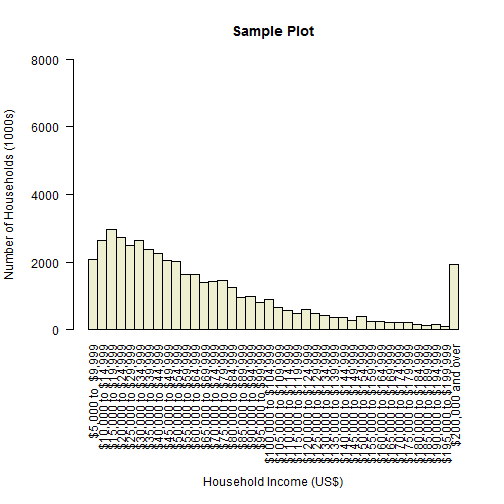
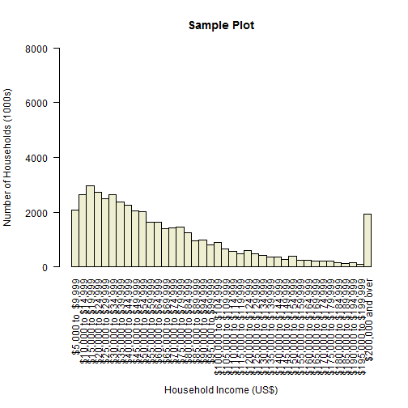
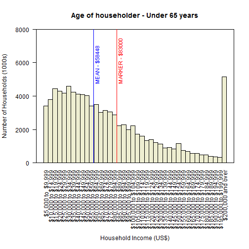

This app provides users with an opportunity to browse US income data broken down by category.

Jason Ives
This app provides users with an opportunity to browse US income data broken down by category.

This quick visualization capability allows users to:
The method used to break down this data can easily be generalized and expanded upon to accomodate a broad range of data sets, providing a standard platform for quick data visualization and review.
Suppose we want to know how our household income of $83000/year compares with others in the work force. Here we can see a sample of the raw data for this question...
colLabels <- colnames(incData[5:(ncol(incData) - 2)])
sampleDf <- as.data.frame(as.character(incData[28,]))
colnames(sampleDf) <- "Sample Data"
rownames(sampleDf) <- colnames(incData)
head(sampleDf, 7)
## Sample Data
## Category Age of householder
## Characteristic Under 65 years
## Total 94223
## Under $5,000 3456
## $5,000 to $9,999 3420
## $10,000 to $14,999 3794
## $15,000 to $19,999 4427
Here is a sample plot of the same data. We can see that our income is well above the mean, but there are also quite a few households making more than us.
